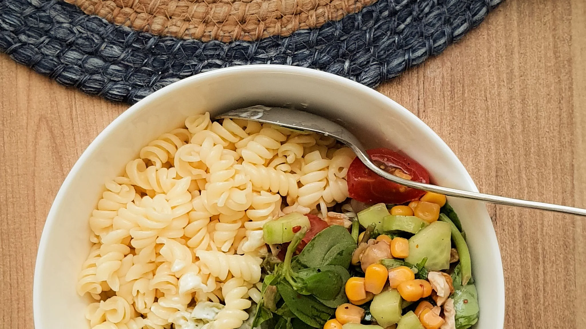
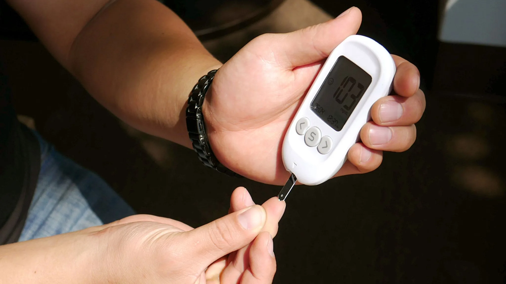
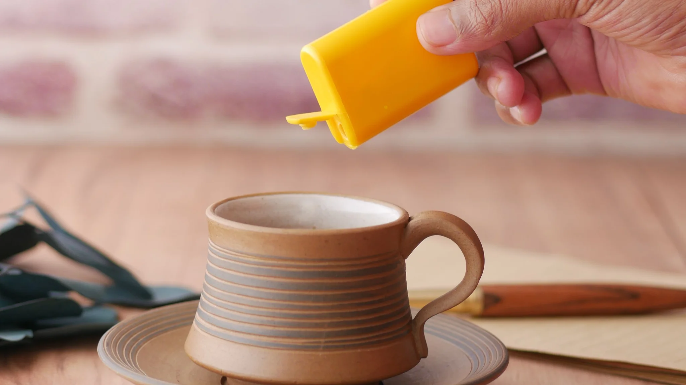
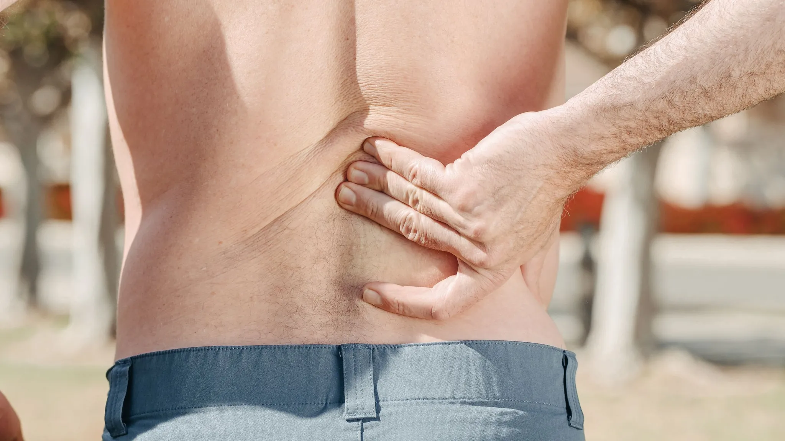
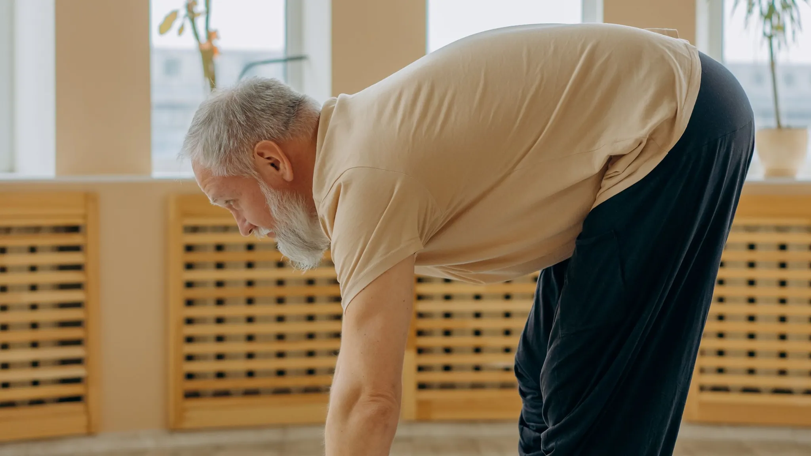
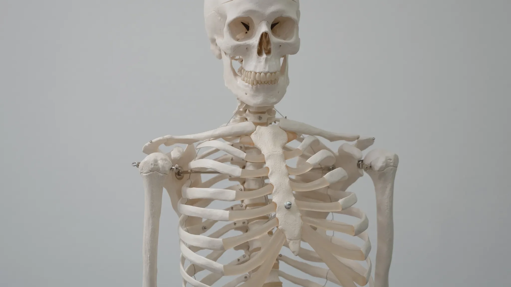
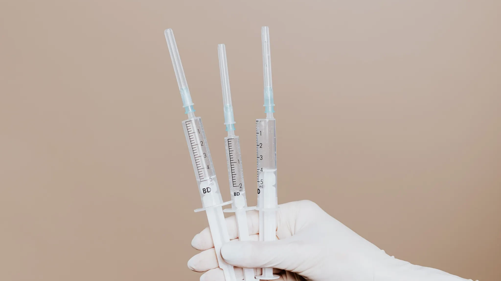
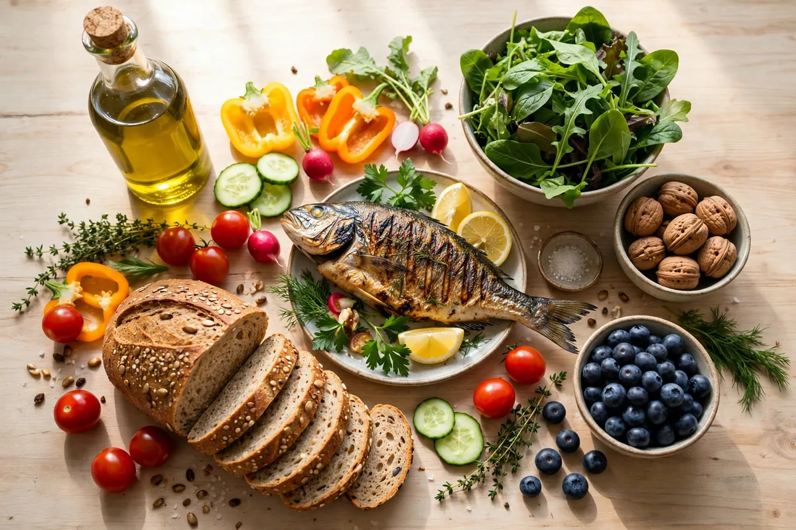

Latest article
27 November 2026 · Knee osteoarthritis and regenerative therapy · Health world news
A stem-cell injection for the knee: can it really repair cartilage?
 Whole-Wheat Bread and Blood Sugar: Could Your Gut Bacteria Make the Difference?
Whole-Wheat Bread and Blood Sugar: Could Your Gut Bacteria Make the Difference?

A gut-friendly diet and stronger joints: can the way you eat protect your knees from osteoarthritis? After 70: a year of exercise builds strength and speeds up walking — even without bigger muscles
Paxlovid and long COVID: can the drug cut the risk of lingering symptoms? What the largest real-world study found
After 70: a year of exercise builds strength and speeds up walking — even without bigger muscles
Paxlovid and long COVID: can the drug cut the risk of lingering symptoms? What the largest real-world study found

Blood sugar creeps up from young adulthood: how it affects your midlife memory before diabetes BMI alone may miss dementia risk: a new obesity definition flags more people at risk
BMI alone may miss dementia risk: a new obesity definition flags more people at risk

The sugar substitute erythritol and stroke risk: what a new genetic study found Air pollution speeds up dementia: 25% higher risk in the most polluted areas — what a 2026 study found
Air pollution speeds up dementia: 25% higher risk in the most polluted areas — what a 2026 study found
 Cupping for Back Pain: A Complete Guide
Knee Osteoarthritis: The Complete Guide
Cupping for Back Pain: A Complete Guide
Knee Osteoarthritis: The Complete Guide
 High Blood Pressure: The Complete Guide
High Blood Pressure: The Complete Guide
 The Healthy Moroccan Kitchen: The Complete Guide
The Healthy Moroccan Kitchen: The Complete Guide
 Sleep Apnea: The Complete Guide
Sleep Apnea: The Complete Guide
 The Cupping Points Map: A Complete Guide
When Is Cupping Unsafe? Contraindications and Warnings
The Cupping Points Map: A Complete Guide
When Is Cupping Unsafe? Contraindications and Warnings
 Cupping and Sports Recovery: A Complete Guide
Cupping and Sports Recovery: A Complete Guide
 Cupping and Migraine: A Complete Guide
Cupping and Migraine: A Complete Guide
 Cupping Through History and Modern Evidence
Cupping Through History and Modern Evidence
 Frozen shoulder: the complete guide to causes, symptoms and treatment
Frozen shoulder: the complete guide to causes, symptoms and treatment

Sciatica: the complete guide to causes, symptoms and treatment Osteoporosis prevention: the complete guide before the first fracture Herniated disc: the complete guide to causes, symptoms and treatment
Herniated disc: the complete guide to causes, symptoms and treatment
 Neck pain: the complete guide to causes, symptoms and treatment
Neck pain: the complete guide to causes, symptoms and treatment
 Ankle sprain: the complete guide to causes, symptoms and treatment
Ankle sprain: the complete guide to causes, symptoms and treatment
 Olive Oil and Health: The Complete Guide
Olive Oil and Health: The Complete Guide
 Sardines and Omega-3: The Complete Guide
Sardines and Omega-3: The Complete Guide
 Dates and Nutrition: The Complete Guide
Dates and Nutrition: The Complete Guide
 Protein After Fifty: The Complete Guide
Protein After Fifty: The Complete Guide
 The Gut Microbiome: The Complete Guide
The Gut Microbiome: The Complete Guide
 Salt and Health: The Complete Guide
Salt and Health: The Complete Guide
 Iron Deficiency and Anemia: The Complete Guide
Iron Deficiency and Anemia: The Complete Guide
 Insomnia: The Complete Guide
Insomnia: The Complete Guide
 The Body Clock (Circadian Rhythm): The Complete Guide
The Body Clock (Circadian Rhythm): The Complete Guide
 Walking and Health: The Complete Guide
Walking and Health: The Complete Guide
 Swimming and Health: The Complete Guide
Swimming and Health: The Complete Guide

Stretching and Flexibility: The Complete Guide Cholesterol: The Complete Guide
Cholesterol: The Complete Guide
 Liver Health: The Complete Guide
Liver Health: The Complete Guide
 Metabolic Syndrome: The Complete Guide
Metabolic Syndrome: The Complete Guide
 Kidney Health: The Complete Guide
Stress and Cortisol: The Complete Guide to Understanding and Managing Stress Every Day
Kidney Health: The Complete Guide
Stress and Cortisol: The Complete Guide to Understanding and Managing Stress Every Day
 Healthy Ageing: The Complete Guide to Preserving Strength, Memory and Independence
Healthy Ageing: The Complete Guide to Preserving Strength, Memory and Independence
 Pregnancy Nutrition: The Complete Guide to Balanced Food and a Safe Pregnancy
Pregnancy Nutrition: The Complete Guide to Balanced Food and a Safe Pregnancy
 Children's Posture and Screens: The Complete Guide to Protecting the Back, Sleep and Eyesight
Children's Posture and Screens: The Complete Guide to Protecting the Back, Sleep and Eyesight
 Ramadan Fasting and Health: The Complete Guide to Healthy and Safe Fasting
Ramadan Fasting and Health: The Complete Guide to Healthy and Safe Fasting
 Preventing Type 2 Diabetes: The Complete Guide to Protecting Your Health
Preventing Type 2 Diabetes: The Complete Guide to Protecting Your Health
 A twice-yearly cholesterol shot that cuts heart attacks and strokes? What the ORION-4 trial proved in 2026
A twice-yearly cholesterol shot that cuts heart attacks and strokes? What the ORION-4 trial proved in 2026
 Experimental nasal drops restore young memory in old mice — but they are not an Alzheimer's treatment yet
Experimental nasal drops restore young memory in old mice — but they are not an Alzheimer's treatment yet
 “Forever chemicals” in water and cookware linked to more aggressive breast cancer? What a 2026 US study found
Gut bacteria changes and selenium disorder: new markers linked to cartilage damage in osteoarthritis
Is 'man flu' real? A mouse study finds males suffer worse viral complications than females
“Forever chemicals” in water and cookware linked to more aggressive breast cancer? What a 2026 US study found
Gut bacteria changes and selenium disorder: new markers linked to cartilage damage in osteoarthritis
Is 'man flu' real? A mouse study finds males suffer worse viral complications than females
 Does turmeric ease knee osteoarthritis pain? A Cochrane review doubts the benefit
Does turmeric ease knee osteoarthritis pain? A Cochrane review doubts the benefit
 Before memory fades: sleep and appetite changes may reveal the beginnings of Alzheimer's
Before memory fades: sleep and appetite changes may reveal the beginnings of Alzheimer's
 Long sitting harms the heart even if you exercise: what the Colorado twin study found
Long sitting harms the heart even if you exercise: what the Colorado twin study found

Silent signs that may reveal scoliosis in your child: the simple Adam's test at home
First mRNA flu vaccine enters commercial use: what did the trial reveal about its effectiveness? Spine bone density linked to brain health and memory: what the Johns Hopkins study found
Spine bone density linked to brain health and memory: what the Johns Hopkins study found
 Belly fat linked to Alzheimer proteins building up in the brain: what did the new study find?
Belly fat linked to Alzheimer proteins building up in the brain: what did the new study find?
 Hepatitis A in Morocco: cases surge after the pandemic and cluster in two regions
Hepatitis A in Morocco: cases surge after the pandemic and cluster in two regions
 Two eggs a day and lower LDL cholesterol? A 2025 study upends what we thought about eggs and saturated fat
Two eggs a day and lower LDL cholesterol? A 2025 study upends what we thought about eggs and saturated fat
 Type 2 diabetes thins the brain’s cortex faster: controlling blood sugar protects the brain too
Type 2 diabetes thins the brain’s cortex faster: controlling blood sugar protects the brain too
 Walking pace matters as much as step count: under 5,000 brisk steps match 7,500 slow ones
Walking pace matters as much as step count: under 5,000 brisk steps match 7,500 slow ones
 Coffee and the heart: two to three cups a day linked to a 15% lower risk of cardiovascular disease
Coffee and the heart: two to three cups a day linked to a 15% lower risk of cardiovascular disease
 Food myths we believe every day: carbs, calories and fats — what is the truth?
Food myths we believe every day: carbs, calories and fats — what is the truth?
 Sleeping with the light on threatens heart health: what did a study of more than 70,000 people find?
Sleeping with the light on threatens heart health: what did a study of more than 70,000 people find?
 A gut bacterium helps burn visceral fat: a new discovery — but so far only in mice
A gut bacterium helps burn visceral fat: a new discovery — but so far only in mice
 Chronic loneliness raises dementia risk by 38%: occasional loneliness does not
Chronic loneliness raises dementia risk by 38%: occasional loneliness does not
 A new drug with chemotherapy shrank pancreatic cancer tumours in 60% of patients: what did the trial find?
A new drug with chemotherapy shrank pancreatic cancer tumours in 60% of patients: what did the trial find?
 Honey or sugar: which is better for your health? What an analysis of 18 clinical trials found
Honey or sugar: which is better for your health? What an analysis of 18 clinical trials found
 Intermittent fasting 16:8: does it really cut weight after a year? What the trials found
Fatty liver: can food reverse it? What two randomised trials said in 2026
Intermittent fasting 16:8: does it really cut weight after a year? What the trials found
Fatty liver: can food reverse it? What two randomised trials said in 2026
 Survodutide: a new obesity drug passes its heart-safety test — what do we know?
Survodutide: a new obesity drug passes its heart-safety test — what do we know?
 A pacemaker that follows the heart's natural wiring: what the OptimPacing trial found
WHO and 21 countries pledge to cut obesity by 5% by 2030: what is the plan?
A pacemaker that follows the heart's natural wiring: what the OptimPacing trial found
WHO and 21 countries pledge to cut obesity by 5% by 2030: what is the plan?
 One pill for blood pressure instead of three: how a new trial more than doubled blood-pressure control
One pill for blood pressure instead of three: how a new trial more than doubled blood-pressure control
 Two heart drugs cut the numbers but not the heart attacks: what the HORIZON and ZEUS trials found
Two heart drugs cut the numbers but not the heart attacks: what the HORIZON and ZEUS trials found
 Migraine plus smoking: stroke risk more than triples before age 60
Migraine plus smoking: stroke risk more than triples before age 60
 Freeze your bread, then toast it: does it really lower blood sugar? What the studies found
Freeze your bread, then toast it: does it really lower blood sugar? What the studies found
 Heat weakens medicines: the SHIELD warning — your drug may lose its power without you noticing
Heat weakens medicines: the SHIELD warning — your drug may lose its power without you noticing
 Why do we get sick more in winter? Cold, noses and dry air — what the science says
Why do we get sick more in winter? Cold, noses and dry air — what the science says
 Antibiotics are failing: resistant Klebsiella infections rose 72% — the WHO warning of 2026
Antibiotics are failing: resistant Klebsiella infections rose 72% — the WHO warning of 2026
 Melatonin and the heart: does long-term use really raise heart-failure risk? What the study showed — and what it did not
Melatonin and the heart: does long-term use really raise heart-failure risk? What the study showed — and what it did not
 Asundexian: a new drug cuts the risk of a second stroke by 26% — who can take it and who cannot?
Asundexian: a new drug cuts the risk of a second stroke by 26% — who can take it and who cannot?
 Baxdrostat: the blood-pressure pill that keeps working two years after you stop? What the NEJM study found
Baxdrostat: the blood-pressure pill that keeps working two years after you stop? What the NEJM study found
 A guide to hijama in Casablanca: types, how to choose a centre, and what happens in a session
A guide to hijama in Casablanca: types, how to choose a centre, and what happens in a session
 The US has officially lost its measles elimination status after 26 years amid a record outbreak
The US has officially lost its measles elimination status after 26 years amid a record outbreak
 Injectable gel regrows knee cartilage? What a 2024 sheep study actually showed
Injectable gel regrows knee cartilage? What a 2024 sheep study actually showed
 A new blood test measures how far Alzheimer’s has spread — what the JAMA study found
A new blood test measures how far Alzheimer’s has spread — what the JAMA study found
 A supplement for fibromyalgia? What a 12-month study found — and what it cannot prove
A supplement for fibromyalgia? What a 12-month study found — and what it cannot prove
 Why coffee and chocolate start to taste better: your brain learns flavours from your gut
Why coffee and chocolate start to taste better: your brain learns flavours from your gut
 Dark chocolate, your heart and your mood: what three 2026 studies found
The Mediterranean diet and biological age: can what you eat really make you younger?
Dark chocolate, your heart and your mood: what three 2026 studies found
The Mediterranean diet and biological age: can what you eat really make you younger?
 Milk peptides and memory: what a new Korean trial and earlier studies actually showed
The sun is there, but the vitamin is missing: why do people in sunny countries suffer from vitamin D deficiency?
Milk peptides and memory: what a new Korean trial and earlier studies actually showed
The sun is there, but the vitamin is missing: why do people in sunny countries suffer from vitamin D deficiency?
 Does your back hurt? The problem may lie beyond your back: inflammation, heart and liver in 3 recent studies
Does your back hurt? The problem may lie beyond your back: inflammation, heart and liver in 3 recent studies
 Change your fat to protect your knee? What a 2026 study revealed about fats and osteoarthritis
Change your fat to protect your knee? What a 2026 study revealed about fats and osteoarthritis

Does forgetting start on the plate? What the latest studies say about food and memory One obesity drug for better sleep and less knee pain? What retatrutide's 2026 results revealed
One obesity drug for better sleep and less knee pain? What retatrutide's 2026 results revealed
 A Handful of Peanuts a Day: Can It Improve Memory and Blood Flow to the Brain? What a Dutch Trial Found in 2026
A Handful of Peanuts a Day: Can It Improve Memory and Blood Flow to the Brain? What a Dutch Trial Found in 2026
 Menopause is not a slow decline… but a sudden "cliff"? What 300 million lab tests revealed
Menopause is not a slow decline… but a sudden "cliff"? What 300 million lab tests revealed
 Can type 2 diabetes go into remission without losing muscle? What a 2026 trial revealed
Can type 2 diabetes go into remission without losing muscle? What a 2026 trial revealed
 Not just the food: the full Mediterranean lifestyle cuts the risk of death by 30% — what a 2026 study revealed
Not just the food: the full Mediterranean lifestyle cuts the risk of death by 30% — what a 2026 study revealed
 Sleeping less than 6 hours? Your joints pay the price — what a 2026 study revealed
Sleeping less than 6 hours? Your joints pay the price — what a 2026 study revealed
 From age 35, your body silently loses muscle — and this is what stops the bleed
From age 35, your body silently loses muscle — and this is what stops the bleed
 Falling is not inevitable after sixty: 5 exercises that protect your balance — and what science has proven
Falling is not inevitable after sixty: 5 exercises that protect your balance — and what science has proven
 Years of strong painkillers and your back still hurts: what a 2026 study revealed
Before painkillers and before scans: what is the first treatment for back pain according to the World Health Organization?
Years of strong painkillers and your back still hurts: what a 2026 study revealed
Before painkillers and before scans: what is the first treatment for back pain according to the World Health Organization?
Original articles backed by scientific sources: reliable information, practical advice, and links to the original research
Latest article
27 November 2026 · Knee osteoarthritis and regenerative therapy · Health world news
27 November 2026 · Knee osteoarthritis and regenerative therapy · Health world news
27 November 2026 · Nutrition and blood sugar · Health world news
26 November 2026 · Nutrition and joints · Health world news
26 November 2026 · Exercise and older adults · Health world news
26 November 2026 · Long COVID and medicines · Health world news
26 November 2026 · Blood sugar and brain health · Health world news
26 November 2026 · Obesity and brain health · Health world news
25 November 2026 · Sugar, heart and brain · Health world news
25 November 2026 · Air pollution and brain health · Health world news
25 November 2026 · Hijama and back pain · Health world news
25 November 2026 · Knee osteoarthritis and joints · Health world news
25 November 2026 · Heart and blood vessel health · Health world news
25 November 2026 · Healthy nutrition · Health world news
25 November 2026 · Sleep and health · Health world news
25 November 2026 · Hijama and its points · Health world news
25 November 2026 · Cupping safety · Health world news
25 November 2026 · Hijama and sport · Health world news
25 November 2026 · Hijama and headache · Health world news
25 November 2026 · Hijama and history · Health world news
25 November 2026 · Bone and joint health · Health world news
25 November 2026 · Hijama and back pain · Health world news
25 November 2026 · Bone and joint health · Health world news
25 November 2026 · Hijama and back pain · Health world news
25 November 2026 · Bone and joint health · Health world news
25 November 2026 · Bone and joint health · Health world news
25 November 2026 · Healthy nutrition · Health world news
25 November 2026 · Healthy nutrition · Health world news
25 November 2026 · Healthy nutrition · Health world news
25 November 2026 · Health with ageing · Health world news
25 November 2026 · Digestive health · Health world news
25 November 2026 · Healthy nutrition · Health world news
25 November 2026 · Nutrition and health · Health world news
25 November 2026 · Sleep and health · Health world news
25 November 2026 · Sleep and health · Health world news
25 November 2026 · Physical activity and health · Health world news
25 November 2026 · Physical activity and health · Health world news
25 November 2026 · Fitness and movement · Health world news
25 November 2026 · Heart and blood vessel health · Health world news
25 November 2026 · Digestive health · Health world news
25 November 2026 · Metabolic and diabetes health · Health world news
25 November 2026 · Kidney and urinary health · Health world news
25 November 2026 · Mental health and stress · Health world news
25 November 2026 · Healthy ageing · Health world news
25 November 2026 · Mother and child health · Health world news
25 November 2026 · Children's health · Health world news
25 November 2026 · Fasting and health · Health world news
25 November 2026 · Diabetes and prevention · Health world news
25 November 2026 · Memory and Alzheimer's · Health world news
25 November 2026 · Chemicals and cancer · Health world news
24 November 2026 · Gut and joints · Health world news
24 November 2026 · Flu and immunity · Health world news
24 November 2026 · Knee osteoarthritis · Health world news
24 November 2026 · Sleep and memory · Health world news
24 November 2026 · Heart and movement · Health world news
23 November 2026 · Children's health and the spine
23 November 2026 · Vaccines and flu
23 November 2026 · Bones and the brain
23 November 2026 · Obesity and the brain
23 November 2026 · Liver and vaccines
23 November 2026 · Eggs and cholesterol
22 November 2026 · Diabetes and the brain
22 November 2026 · Walking and longevity
22 November 2026 · Coffee and the heart
22 November 2026 · Nutrition and food myths
22 November 2026 · Sleep and the heart
22 November 2026 · Gut bacteria and obesity
22 November 2026 · Loneliness and dementia
22 November 2026 · Cancer and medicines
21 November 2026 · Nutrition
21 November 2026 · Nutrition and weight
21 November 2026 · Liver and nutrition
21 November 2026 · Obesity and medicines
21 November 2026 · Heart
21 November 2026 · Obesity and public health
21 November 2026 · Blood pressure
21 November 2026 · Heart and medicines
20 November 2026 · Migraine and stroke
20 November 2026 · Food and blood sugar
20 November 2026 · Medicines and climate
20 November 2026 · Winter and immunity
20 November 2026 · Antibiotics and infections
20 November 2026 · Sleep and the heart
20 November 2026 · Stroke and medicines
20 November 2026 · Blood pressure and medicines
20 November 2026 · Cupping
19 November 2026 · Vaccines and public health
19 November 2026 · Joints and cartilage
19 November 2026 · Alzheimer’s and the brain
19 November 2026 · Chronic pain and fibromyalgia
19 November 2026 · Brain and nutrition
19 November 2026 · Nutrition and the heart
19 November 2026 · Nutrition and ageing
19 November 2026 · Memory and nutrition
18 November 2026 · Vitamins and health
18 November 2026 · Low back pain and general health
18 November 2026 · Nutrition and joints
16 November 2026 · Food and memory
18 November 2026 · Obesity, sleep and joints
18 November 2026 · Nutrition and memory
18 November 2026 · Women's health and bones
18 November 2026 · Diabetes and muscles
18 November 2026 · Nutrition and lifestyle
27 October 2026 · Sleep and joints
27 October 2026 · Strength and muscles
27 October 2026 · Balance and fall prevention
2 November 2026 · Back pain and medicines
9 November 2026 · Back pain and first-line treatment
27 November 2026 · Knee osteoarthritis and regenerative therapy
27 November 2026 · Nutrition and blood sugar
26 November 2026 · Nutrition and joints
26 November 2026 · Exercise and older adults
We only search our own site’s articles